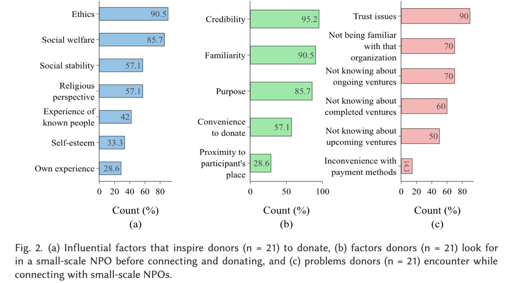

Rudaiba Adnin, Abir Saha, and Maitraye Das. 2026.
Proceedings of the 28th International ACM SIGACCESS Conference on Computers and Accessibility (ASSETS '26)
Rudaiba Adnin, Abir Saha, and Maitraye Das. 2026.
Proceedings of the 28th International ACM SIGACCESS Conference on Computers and Accessibility (ASSETS '26)

Qiushi Liang, Rudaiba Adnin, and Maitraye Das. 2026.
Proceedings of the 28th International ACM SIGACCESS Conference on Computers and Accessibility (ASSETS '26)
Honorable Mention

Examining Student and Teacher Perspectives on Undisclosed Use of Generative AI in Academic Work.
Rudaiba Adnin , Atharva Pandkar, Bingsheng Yao, Dakuo Wang, and Maitraye Das. 2025.
Proceedings of the 2025 CHI Conference on Human Factors in Computing Systems (CHI ’25)

Kanak: Automating the Generation of Accessible STEM Materials for Blind and Low-vision Students.
Hari Prasath Palani, Rudaiba Adnin , and Shivangee Nagar. 2025.
Proceedings of the 37th Australian Conference on Human-Computer Interaction (OzCHI ’25)

“I look at it as the king of knowledge”: How Blind People Use and Understand Generative AI Tools.
Rudaiba Adnin and Maitraye Das. 2024.
Proceedings of the 26th International ACM SIGACCESS Conference on Computers and Accessibility (ASSETS ’24)

Rudaiba Adnin , Ishita Haque, Sadia Afroz, Alvi Md. Ishmam, Sakil Sarkar, Md. Kafi Khan, Afsana Mimi, Sriram Chellappan, and A. B. M. Alim Al Islam. 2023.
Proceedings of the 7th ACM SIGCAS/SIGCHI Conference on Computing and Sustainable Societies.